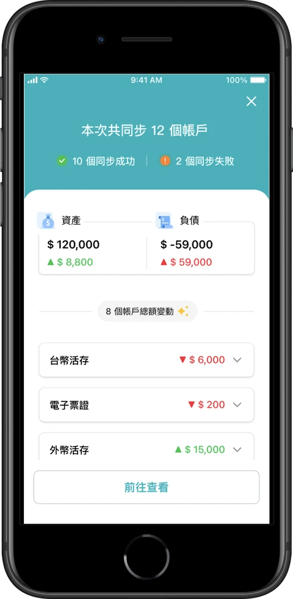
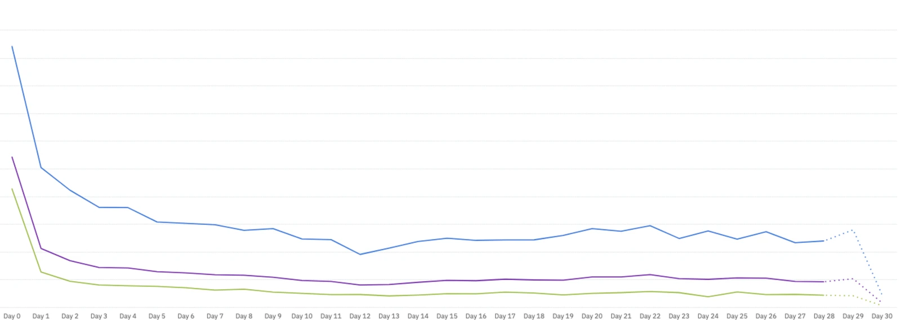

Moneybook 麻布記帳・整合金融帳戶的個人財務管理服務
優化同步完成後的體驗，以「動態財務差額」重塑價值感知
強化使用者完成帳戶同步後的價值感知，讓使用者更容易理解財務變化並持續查看資產更新結果，提升核心功能互動與回訪意願
使用者已綁定多個金融帳戶，持續回訪的意願卻仍然偏低
為了找出推進 Product-Market Fit (PMF) 的關鍵留存槓桿，我透過使用者行為梳理與 KANO 模型量化調研，診斷出三大核心原因：
同步完成後缺乏明確的價值回饋
使用者完成多個金融帳戶綁定後，畫面仍以靜態總額為主，無法立即理解此次同步帶來的財務資訊變化，形成「看完總額，然後呢？」的體驗斷點。
核心期望體驗尚未被滿足
KANO 分析顯示「統一查看各帳戶總額」、「查看所有交易明細」等掌握財務變動的功能屬於期望型需求 (Performance)；然而，缺乏前後差額比對與交易異動提示，直接削弱使用者的財務掌控感與留存意願。
缺乏低摩擦力的回訪習慣迴路
使用者需逐一點開多個帳戶核對明細，認知負荷過高；平台缺乏一個能在短時間內回應「財務狀況有無異常、最近錢花去哪」的價值定錨。
將同步完成通知重新定位為使用者理解跨帳戶整合價值的接觸點
產品不應只告訴使用者資料已經同步完成，而應讓使用者立即看見這次同步所帶來的財務資訊價值：
全局財務變動摘要
顯示同步後資產與負債的總額變化。
個別帳戶交易與餘額變化
讓使用者快速找到有新交易的帳戶，減少逐一核對成本。
讓使用者在同步完成當下，一眼看懂這次帳戶資料帶來的變化
將同步結果轉化為可立即理解的財務變動摘要

- 同步結果總覽顯示本次共同步幾個帳戶，以及成功與失敗的數量。
- 資產與負債的總額變動直接呈現同步後的資產、負債總額與增減金額。
- 有變動帳戶的清單列出總額有變動的帳戶與增減金額，點開可查看交易明細，並可「前往查看」進入帳戶。
有瀏覽同步完成頁的使用者，長尾留存率穩定高於未瀏覽者
功能上線後追蹤 Cohort 留存曲線，「有瀏覽同步完成頁」的使用者，其長尾留存率穩定高於「未瀏覽者」

橫軸為首次使用後的天數；Day 29–30 虛線為資料尚未完整的區間
價值感知與長期回訪的正向關聯
這項觀察支持財務更新結果的價值感知與使用者長期回訪之間存在正向關聯，也提供後續推動 NSM 1（每月有查看帳戶更新結果的活躍使用者）的策略訊號
從單次價值感知，延伸到日常管帳效率
同步完成頁讓使用者更容易理解近期財務變化，但要形成穩定的管帳習慣，仍需要在日常使用中持續獲得價值。因此，後續產品策略將從單次價值感知延伸至日常管帳效率：先透過 Freemium 穩定基本查帳與分析體驗，再以 Premium 提供進階財務報告、明細分析與主動告警，深化 Engagement 並推動 NSM 2 (MRR) 的成長。
深化管帳效率與訂閱變現
穩定基本管帳體驗，並在此基礎上，發展進階的管帳功能，創造付費誘因